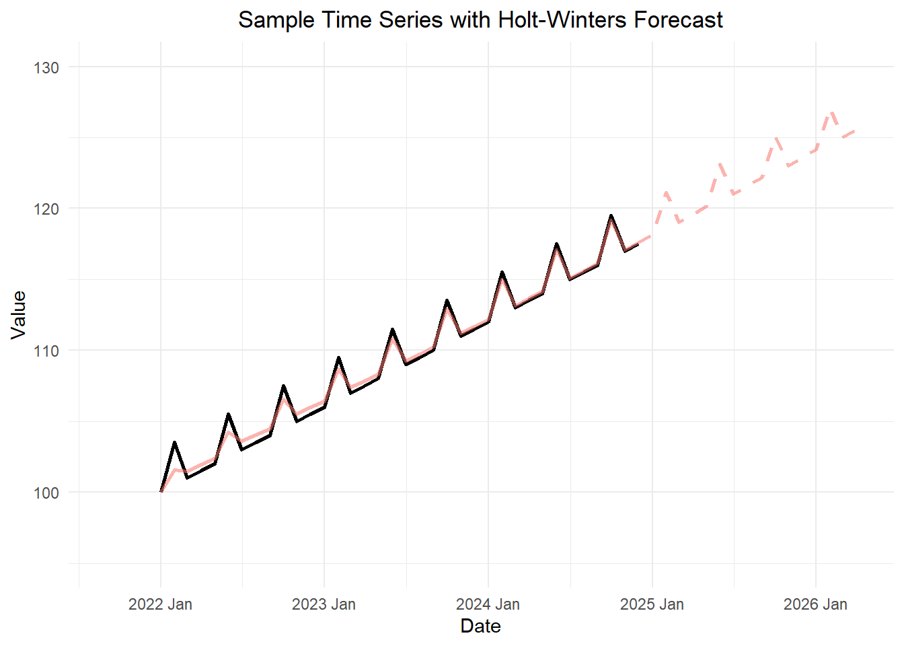

Holt-Winters Method (Additive Model)
Chapter 3: Lesson 3
Learning Outcomes
Implement the Holt-Winter method to forecast time series
- Justify the need for the Holt-Winters method of exponential smoothing
- Describe how to obtain initial parameters for the Holt-Winters algorithm
- Explain the Holt-Winters method equations for additive decomposition models
- Explain the purpose of the paramters \(\alpha\), \(\beta\), and \(\gamma\)
- Interpret the coefficient estimates \(a_t\), \(b_t\), and \(s_t\) of the Holt-Winters smoothing algorithm
- Explain the Holt-Winters forecasting equation for additive decomposition models, Equation (3.22)
- Use HoltWinters() to forecast additive model time series
- Plot the Holt-Winters decomposition of a time series (see Fig 3.10)
- Plot the Holt-Winters fitted values versus the original time series (see Fig 3.11)
- Superimpose plots of the Holt-Winters predictions with the time series realizations (see Fig 3.13)
Preparation
- Read Section 3.4.2 (Page 59)
Learning Journal Exchange (10 mins)
Review another student’s journal
What would you add to your learning journal after reading another student’s?
What would you recommend the other student add to their learning journal?
Sign the Learning Journal review sheet for your peer
Class Discussion: Theory Supporting the EWMA
Introduction to the Holt-Winters Method (Additive Model)
We will describe the historical progression that led to the Holt-Winters method.
Review: Exponentially Weighted Moving Average (EWMA) or Simple Exponential Smoothing
The exponential weighted moving average (EWMA) is a simple method for smoothing (or filtering) a time series. The update equation for the estimate of the level of the time series is
\[ a_t = \alpha x_t + (1-\alpha) a_{t-1} \]
where \(a_t\) is the estimate of the level of the time series at time \(t\) and \(0 \le \alpha \le 1\) is the smoothing paramter.
This is known as the level update equation, because at each time step, we can update our estimate of the level (or the center) of the time series. It is called exponential smoothing, because at each preceding value has exponentially decreasing influence on the estimate.
These computations are based on previous values and \(a_1 = x_1\). The number \(0 \le \alpha \le 1\) is a smoothing parameter. This determines how much weight is given to previous values when creating the updated level estimate.
If you were to use this model for forecasting, you would not be able to consider any trend or seasonality in the forecast. Hence, the future values would all be forecasted as the last value of \(a_n\):
\[ \hat x_{n+k|n} = a_n \] where \(\hat x_{n+k \mid n}\) is the estimate of the time series \(k\) time units in the future past time \(t=n\). Frankly, this is not very useful, because many time series have trends or seasonality.
Holt’s Exponential Smoothing
In 1957, Charles Holt published a new procedure that introduced a trend into this model. The forecasted values were:
\[ \hat x_{n+k|n} = a_n + k b_n \]
where \(b_n\) is the slope indicating how much the time series changes on average from one time point to another and \(k\) is the number of time periods past \(t=n\) you are forecasting.
This method uses the same level update equation as EMWA. The slope update equation is:
\[ b_t = \beta \left( a_t - a_{t-1} \right) + (1-\beta) b_{t-1} \]
where \(0 \le \beta \le 1\) is a smoothing parameter, \(b_t\) is the slope estimate at time \(t\), and \(a_t\) is the estimate of the level of the time series at time \(t\).
Holt-Winters Filtering (Winters’ Exponential Smoothing)
Peter Winters, a colleague of Holt’s at the Carnagie Institute of Technology, published an enhancement of Winters’ technique in 1960 that allowed for seasonal variation. This is known as the Holt-Winters Method or Holt-Winters Filtering.
Forecast Equation
The forecast equation is:
\[ \hat x_{n+k|n} = a_n + k b_n + s_{n+k-p} \]
where \(\hat x_{n+k|n}\) is the forecasted value of the time series \(k\) units in the future after time \(t=n\), and the time series is assumed to have seasonality with a period of \(p\) time units; \(a_n\) is the level of the time series at time \(t=n\); \(b_n\) is the slope of the time series at time \(t=n\); and \(s_{n+k-p}\) is the estimated seasonal component at time \(t=n+k-p\). Note that we must look back one full period to get the estimated seasonal component.
Update Equations
There are three update equations, one each for \(a_t\) (level), \(b_t\) (slope), and \(s_t\) (seasonal component).
\[\begin{align*} a_t &= \alpha \left( x_t - s_{t-p} \right) + (1-\alpha) \left( a_{t-1} + b_{t-1} \right) && \text{Level} \\ b_t &= \beta \left( a_t - a_{t-1} \right) + (1-\beta) b_{t-1} && \text{Slope} \\ s_t &= \gamma \left( x_t - a_t \right) + (1-\gamma) s_{t-p} && \text{Seasonal} \end{align*}\]
where \(\{x_t\}\) is a time series from \(t=1\) to \(t=n\) that has seasonality with a period of \(p\) time units; at time \(t\), \(a_t\) is the estimated level of the time series, \(b_t\) is the estimated slope, and \(s_t\) is the estimated seasonal component; and \(\alpha\), \(\beta\), and \(\gamma\) are parameters (all between 0 and 1).
Initial Estimates of \(a_t\), \(b_t\), and \(s_t\)
We can use the update equations to compute the next value of \(a_t\), \(b_t\), and \(s_t\), once we get going. Yet, how do we get started? What are the initial values of these estimates?
Estimating \(a_1\):
It is reasonable to let \(a_1 = x_t\). We simply start our estimate of the level of the time series at the initial data value.
Estimating \(b_1\):
For the value of \(b_1\), the Cowpertwait textbook vaguely suggests estimating this from the data or setting it to zero. Setting \(b_1\) to zero is problematic, because it adversely affects the level and slope estimates at the beginning of the time series. We need a better way.
We will approximate \(b_1\) by averaging the slope between pairs of points one period apart. Recall that \(p\) is the number of observations per period. (Monthly data which have an annual cycle would have \(p=12\). Daily data with a weekly cycle have \(p=7\).) Note that the fraction in the “Check Your Understanding” box above is an estimate of the slope of the time series as it moves from time \(1\) to time \(p+1\). These are the first observations in the first two cycles. We compute these estimated slopes for all the paired observations in the first two cycles, then we compute the mean of these slopes. This is reflected in the expression for \(b_1\):
\[ b_1 = \frac{ \left( \dfrac{x_{p+1} - x_{1}}{p} + \dfrac{x_{p+2} - x_{2}}{p} + \dfrac{x_{p+3} - x_{3}}{p} + \cdots + \dfrac{x_{2p-1} - x_{p-1}}{p} + \dfrac{x_{2p} - x_{p}}{p} \right) }{p} \]
Estimating \(s_1, s_2, \ldots s_p\):
The initial \(p\) values of the seasonal effects, \(s_1, s_2, \ldots s_p\), can be determined either by estimating based on the data or your prior experience; alternatively, they could be set to 0. For \(t=1, 2, 3, \ldots, p\) iterations, use your estimate for \(s_t\) when the formulas call for \(s_{t-p}\).
Illustration of the Holt-Winters Method for a Sample Time Series
The Holt-Winters method provides a way to model a time series in which we consider the time series in layers. first, there is the level (the smoothed \(x_t\) values from the time series) at time \(t\). We will denote the level by \(a_t\). The level can change from time to time. We introduce a value \(b_n\), which we call the slope. This is the change in the level of the series from one time period to another. (As the book points out, R and many textbooks call the slope the trend.) Finally, we include a seasonal estimate, \(s_t\), which indicates how much the time series rises or falls above the level and trend values at time \(t\).
To visualize these terms, it can be helpful to consider the forecasting model. Suppose we have computed that Holt-Winters estimate of a time series with \(n\) observations. In other words, we have just fit a curve to the entire time series. We will use a very simple time series for this illustration.
First, consider a time series that has a seasonal pattern of (100, 104, 100, 100) with zero trend and random components. This is illustrated in Figure 1.
Now, we add a slope of \(\frac{1}{2}\) to this time series. In Figure 2, we observe the same sample time series, but with the added component of a slope.
Next, we apply the Holt-Winters method to these data. Figure 3 illustrates the Holt-Winters filter plotted against the data.

WORKING HERE………..
WORKING HERE………..
WORKING HERE………..
Need to create blank table (with rounded values) and compute solutions (based on rounded values)
Small Group Activity: Holt-Winters Model for Residential Natural Gas Consumption (25 min)
The United States Energy Information Administration (EIA) publishes data on the total residential natural gas consumption in the country. The government publishes monthly data beginning in January 1973. For the purpose of this example, we will only consider quarterly values beginning in 2017. The data are given in MMcf (thousand-thousand cubic feet, or millions of cubic feet). We convert the data to billions of cubic feet (Bcf) to make the numbers a little more manageable.
Show the code
nat_gas <- rio::import("https://byuistats.github.io/timeseries/data/natural_gas_res.csv") |>
mutate(date = my(month)) |>
filter(date >= my("Jan 2017")) |>
mutate(quarter = yearquarter(date)) |>
group_by(quarter) |>
summarize(
gas_use_mmcf = sum(residential_nat_gas_consumption),
n = n()
) |>
filter(n == 3) |> # Eliminate partial quarter(s)
dplyr::select(-n) |>
mutate(gas_billion_cf = round(gas_use_mmcf / 10^3))| quarter | gas_use_mmcf | gas_billion_cf |
|---|---|---|
| 2017 Q1 | 1990316 | 1990 |
| 2017 Q2 | 602515 | 603 |
| 2017 Q3 | 325786 | 326 |
| 2017 Q4 | 1494706 | 1495 |
| 2018 Q1 | 2330552 | 2331 |
| 2018 Q2 | 729111 | 729 |
| ⋮ | ⋮ | ⋮ |
| 2022 Q2 | 709645 | 710 |
| 2022 Q3 | 327101 | 327 |
| 2022 Q4 | 1590005 | 1590 |
| 2023 Q1 | 2114999 | 2115 |
| 2023 Q2 | 663003 | 663 |
| 2023 Q3 | 328735 | 329 |
The quarters consist of the following months: - Quarter 1: Jan, Feb, Mar - Quarter 2: Apr, May, Jun - Quarter 3: Jul, Aug, Sep - Quarter 4: Oct, Nov, Dec
The weather is colder in the first and fourth quarters, so the demand for natural gas will be higher then. Also, the demand for natural gas over the four quarters can easily vary by as much as 2000 Bcf. We will use this information to create an initial estimate of the seasonality of the time series. We will assume that in Quarters 1 and 4, natural gas use is 1000 Bcf above the level of the time series and in Quarters 2 and 3, it is 1000 Bcf below the level of the time series.
The part of the time series we are using begins in Quarter 1 of 2017. So we will let \[ s_{Q1} = 1000, ~~~ s_{Q2} = -1000, ~~~ s_{Q3} = -1000, ~~~ s_{Q4} = 1000 \]
There are \(p=4\) quarters in a year. We will implement these in the model as \[ s_{1-p} = s_{(-3)} = 1000, ~~~ s_{2-p} = s_{(-2)} = -1000, ~~~ s_{3-p} = s_{(-1)} = -1000, ~~~ s_{4-p} = s_{0} = 1000 \]

Small Group Activity: Holt-Winters Model for BYU-Idaho Enrollment Data (25 min) — MULTIPLICATIVE
In Chapter 2, Lesson 3, we explored the BYU-Idaho Enrollment data. We will apply the Holt-Winters model to these data with \(\alpha = \beta = \gamma = 0.2\). Figure 4 illustrates these data.
Show the code
# read in the data from a csv and make the tsibble
# byui_enrollment_ts <- rio::import("https://byuistats.github.io/timeseries/data/byui_enrollment_2012.csv") |>
byui_enrollment_ts <- rio::import("data/byui_enrollment_2012.csv") |>
rename(
semester = "TermCode",
year = "Year",
enrollment = "On Campus Enrollment (Campus HC)"
) |>
mutate(
term =
case_when(
left(semester, 2) == "WI" ~ 1,
left(semester, 2) == "SP" ~ 2,
left(semester, 2) == "FA" ~ 3,
TRUE ~ NA
)
) |>
filter(!is.na(term)) |>
mutate(dates = yearmonth( ym( paste(year, term * 4 - 3) ) ) ) |>
dplyr::select(semester, dates, enrollment) |>
as_tsibble(index = dates)
# |>
# filter(dates >= my("May 2019"))
byui_enrollment_ts |>
as_tibble() |>
hw_additive_slope_additive_seasonal("dates", "enrollment", p = 3, predict_periods = 12) |>
as_tsibble(index = date) |>
ggplot(aes(x = date)) +
geom_line(aes(y = x_t), color = "black", size = 1) +
geom_line(aes(y = a_t + s_t, color = "Combined", alpha=0.5), size = 1) +
geom_line(aes(y = xhat_t, color = "Combined", alpha=0.5), linetype = "dashed", size = 1) +
# coord_cartesian(ylim = c(95,130)) +
labs(
x = "Date",
y = "Value",
title = "BYU-Idaho Enrollments with Holt-Winters Forecast",
color = "Components"
) +
theme_minimal() +
theme(legend.position = "none") +
theme(
plot.title = element_text(hjust = 0.5)
)
enrollment_ts <- rio::import("https://byuistats.github.io/timeseries/data/byui_enrollment.csv") |>
mutate(dates = yearmonth( ym( paste(year, term * 4 - 3) ) ) ) |>
dplyr::select(semester, dates, enrollment) |>
as_tsibble(index = dates)
extra_terms <- enrollment_ts |>
tail(6) |>
mutate(dates = yearmonth(ym(dates) + years(2))) |>
mutate(
semester = paste0(
left(semester, 2),
as.integer(right(semester, 2)) + 2
)
) |>
mutate(enrollment = NA)
enrollment_ts |>
bind_rows(extra_terms) |>
autoplot(.vars = enrollment) +
labs(
x = "Time",
y = "Enrollment",
title = paste0("BYU-Idaho On-Campus Enrollment Counts")
) +
theme(
plot.title = element_text(hjust = 0.5)
)Warning: Removed 6 rows containing missing values (`geom_line()`).
Table 1 summarizes the intermediate values for Holt-Winters filtering.
| $$Semester$$ | $$t$$ | $$x_t$$ | $$a_t$$ | $$b_t$$ | $$s_t$$ | $$\hat x_t$$ |
|---|---|---|---|---|---|---|
| SP19 | 1 | 15422 | ||||
| FA19 | 2 | 20592 | ||||
| WI20 | 3 | 19211 | ||||
| SP20 | 4 | 14435 | ||||
| FA20 | 5 | 21337 | ||||
| WI21 | 6 | 19683 | ||||
| SP21 | 7 | 16046 | 18541 | 329 | -897 | |
| FA21 | 8 | 20377 | 19037 | 363 | 807 | |
| WI22 | 9 | 18425 | 19162 | 315 | 24 | |
| SP22 | 10 | 14246 | 18610 | 142 | -1590 | |
| FA22 | 11 | 19441 | 18728 | 137 | 788 | |
| WI23 | 12 | 17740 | 18635 | 91 | -160 | |
| SP23 | 13 | 12798 | ||||
| FA23 | 14 | 18714 | ||||
| WI24 | 15 | |||||
| SP24 | 16 | |||||
| FA24 | 17 | |||||
| WI25 | 18 | |||||
| SP25 | 19 | |||||
| FA25 | 20 |
Small Group Activity: Application of Holt-Winters in R using the Baltimore Crime Data (20 min)
Background
The City of Baltimore publishes crime data, which can be accessed through a query. This dataset is sourced from the City of Baltimore Open Data. You can explore the data on data.world.
Use the following code to import the data:
Show the code
crime_df <- rio::import("https://byuistats.github.io/timeseries/data/baltimore_crime.parquet")The data set consists of 285807 rows and 12 columns. There are a few key variables:
- Date and Time: Records the date and time of each incident.
- Location: Detailed coordinates of each incident.
- Crime Type: Description of the type of crime.
When exploring a new time series, it is crucial to carefully examine the data. Here are a few rows of the original data set. Note that the data are not sorted in time order.
| CrimeDate | CrimeTime | CrimeCode | Location | Description | Inside.Outside | Weapon | Post | District | Neighborhood | Location.1 | Total.Incidents |
|---|---|---|---|---|---|---|---|---|---|---|---|
| 11/12/2016 | 02:35:00 | 3B | 300 SAINT PAUL PL | ROBBERY - STREET | O | NA | 111 | CENTRAL | Downtown | (39.2924100000, -76.6140800000) | 1 |
| 11/12/2016 | 02:56:00 | 3CF | 800 S BROADWAY | ROBBERY - COMMERCIAL | I | FIREARM | 213 | SOUTHEASTERN | Fells Point | (39.2824200000, -76.5928800000) | 1 |
| 11/12/2016 | 03:00:00 | 6D | 1500 PENTWOOD RD | LARCENY FROM AUTO | O | NA | 413 | NORTHEASTERN | Stonewood-Pentwood-Winston | (39.3480500000, -76.5883400000) | 1 |
| 11/12/2016 | 03:00:00 | 6D | 6600 MILTON LN | LARCENY FROM AUTO | O | NA | 424 | NORTHEASTERN | Westfield | (39.3626300000, -76.5516100000) | 1 |
| 11/12/2016 | 03:00:00 | 6E | 300 W BALTIMORE ST | LARCENY | O | NA | 111 | CENTRAL | Downtown | (39.2893800000, -76.6197100000) | 1 |
| 11/12/2016 | 03:00:00 | 4E | 6900 MCCLEAN BLVD | COMMON ASSAULT | I | HANDS | 423 | NORTHEASTERN | Hamilton Hills | (39.3707000000, -76.5670900000) | 1 |
| ⋮ | ⋮ | ⋮ | ⋮ | ⋮ | ⋮ | ⋮ | ⋮ | ⋮ | ⋮ | ⋮ | ⋮ |
| 01/01/2011 | 23:00:00 | 7A | 2500 ARUNAH AV | AUTO THEFT | O | NA | 721 | WESTERN | Evergreen Lawn | (39.2954200000, -76.6592800000) | 1 |
| 01/01/2011 | 23:25:00 | 4E | 100 N MONROE ST | COMMON ASSAULT | I | HANDS | 714 | WESTERN | Penrose/Fayette Street Outreach | (39.2899900000, -76.6470700000) | 1 |
| 01/01/2011 | 23:38:00 | 4D | 800 N FREMONT AV | AGG. ASSAULT | I | HANDS | 123 | WESTERN | Upton | (39.2981200000, -76.6339100000) | 1 |
We now summarize the data into a daily tsibble.
Show the code
# Data Summary and Aggregation
# Group by dates column and summarize from Total.Incidents column
daily_summary_df <- crime_df |>
rename(dates = CrimeDate) |>
group_by(dates) |>
summarise(incidents = sum(Total.Incidents))
# Data Transformation and Formatting
# Select relevant columns, format dates, and arrange the data
crime_data <- daily_summary_df |>
mutate(dates = mdy(dates)) |>
mutate(
month = month(dates),
day = day(dates),
year = year(dates)
) |>
arrange(dates) |>
dplyr::select(dates, month, day, year, incidents)
# Convert formatted data to a tsibble with dates as the index
crime_tsibble <- as_tsibble(crime_data, index = dates) Here are a few rows of the data when summarized daily.
| dates | month | day | year | incidents |
|---|---|---|---|---|
| 2011-01-01 | 1 | 1 | 2011 | 185 |
| 2011-01-02 | 1 | 2 | 2011 | 102 |
| 2011-01-03 | 1 | 3 | 2011 | 106 |
| 2011-01-04 | 1 | 4 | 2011 | 113 |
| 2011-01-05 | 1 | 5 | 2011 | 131 |
| 2011-01-06 | 1 | 6 | 2011 | 107 |
| ⋮ | ⋮ | ⋮ | ⋮ | ⋮ |
| 2016-11-10 | 11 | 10 | 2016 | 109 |
| 2016-11-11 | 11 | 11 | 2016 | 115 |
| 2016-11-12 | 11 | 12 | 2016 | 69 |
Here is a time plot of the number of crimes reported in Baltimore daily.
Show the code
# Time series plot of total incidents over time
crime_plot <- autoplot(crime_tsibble, .vars = incidents) +
labs(
x = "Time",
y = "Total Crime Incidents",
title = "Total Crime Incidents Over Time"
) +
theme(plot.title = element_text(hjust = 0.5))
# Display the plot
crime_plot
The following table summarizes the number of days in each month for which crime data were reported.
Show the code
crime_data |>
mutate(month_char = format(as.Date(dates), '%b') ) |>
group_by(month, month_char, year) |>
summarise(n = n(), .groups = "keep") |>
group_by() |>
arrange(year, month) |>
dplyr::select(-month) |>
rename(Year = year) |>
pivot_wider(names_from = month_char, values_from = n) |>
display_table()| Year | Jan | Feb | Mar | Apr | May | Jun | Jul | Aug | Sep | Oct | Nov | Dec |
|---|---|---|---|---|---|---|---|---|---|---|---|---|
| 2011 | 31 | 28 | 31 | 30 | 31 | 30 | 31 | 31 | 30 | 31 | 30 | 31 |
| 2012 | 31 | 29 | 31 | 30 | 31 | 30 | 31 | 31 | 30 | 31 | 30 | 31 |
| 2013 | 31 | 28 | 31 | 30 | 31 | 30 | 31 | 31 | 30 | 31 | 30 | 31 |
| 2014 | 31 | 28 | 31 | 30 | 31 | 30 | 31 | 31 | 30 | 31 | 30 | 31 |
| 2015 | 31 | 28 | 31 | 30 | 31 | 30 | 31 | 31 | 30 | 31 | 30 | 31 |
| 2016 | 31 | 29 | 31 | 30 | 31 | 30 | 31 | 31 | 30 | 31 | 12 | NA |
Monthly Summary
We could analyze the data at the daily level, but for simplicity we will model the monthly totals.
Show the code
crime_monthly_ts <- crime_tsibble |>
as_tibble() |>
mutate(months = yearmonth(dates)) |>
group_by(months) |>
summarize(value = sum(incidents)) |>
as_tsibble(index = months)
# Plot mean annual total incidents using autoplot
autoplot(crime_monthly_ts, .vars = value) +
labs(
x = "Year",
y = "Total Monthly Crime Incidents",
) +
theme(plot.title = element_text(hjust = 0.5))
There is incomplete data for 2016, as data were not provided after 11/12/2016. We will omit any data after October 2016.
Show the code
crime_monthly_ts1 <- crime_monthly_ts |>
filter(months < yearmonth(mdy("11/1/2016")))We apply Holt-Winters filtering on the monthly Baltimore crimes data with an additive model:
Show the code
crime_hw <- crime_monthly_ts1 |>
tsibble::fill_gaps() |>
model(Additive = ETS(value ~
trend("A") +
error("A") +
season("A"),
opt_crit = "amse", nmse = 1))
report(crime_hw)Series: value
Model: ETS(A,A,A)
Smoothing parameters:
alpha = 0.4102911
beta = 0.0001719
gamma = 0.001008159
Initial states:
l[0] b[0] s[0] s[-1] s[-2] s[-3] s[-4] s[-5]
4318.875 -4.475258 -83.12823 -38.36167 374.3369 217.8943 416.0997 428.0887
s[-6] s[-7] s[-8] s[-9] s[-10] s[-11]
301.8743 366.7473 -141.8365 -334.7158 -1039.907 -467.0918
sigma^2: 45518.72
AIC AICc BIC
1064.040 1075.810 1102.265 We can compute some values to assess the fit of the model:
Show the code
# SS of random terms
sum(components(crime_hw)$remainder^2, na.rm = T)
# RMSE
accuracy(crime_hw)$RMSE
# Standard devation of number of incidents each month
sd(crime_monthly_ts1$value)- The sum of the square of the random terms is: 2.4580111^{6}.
- The root mean square error (RMSE) is: 187.388486.
- The standard deviation of the number of incidents each month is 22.9761197.
Figure 5 illustrates the Holt-Winters decomposition of the Baltimore crime data.
Show the code
autoplot(components(crime_hw))Warning: Removed 12 rows containing missing values (`geom_line()`).
In Figure 6, we can observe the relationship between the Holt-Winters filter and the time series of the number of crimes each month.
Show the code
augment(crime_hw) |>
ggplot(aes(x = months, y = value)) +
coord_cartesian(ylim = c(0,5500)) +
geom_line() +
geom_line(aes(y = .fitted, color = "Fitted")) +
labs(color = "")
Figure 7 contains the information from Figure 6, with the addition of an additional four years of forecasted values. The light blue bands give the 95% prediction bands for the forecast.
Show the code
crime_forecast <- crime_hw |>
forecast(h = "4 years")
crime_forecast |>
autoplot(crime_monthly_ts1, level = 95) +
coord_cartesian(ylim = c(0,5500)) +
geom_line(aes(y = .fitted, color = "Fitted"),
data = augment(crime_hw)) +
scale_color_discrete(name = "")
Rethinking Baltimore
The monthly crime data shows a distinct pattern arcing through the annual cycle. Consider the data for 2011
| Jan | Feb | Mar | Apr | May | Jun | Jul | Aug | Sep | Oct | Nov | Dec |
|---|---|---|---|---|---|---|---|---|---|---|---|
| 3440 | 3108 | 4269 | 4149 | 4516 | 4427 | 4669 | 4574 | 4377 | 4644 | 4411 | 4067 |
Homework Preview (5 min)
- Review upcoming homework assignment
- Clarify questions

References
- C. C. Holt (1957) Forecasting seasonals and trends by exponentially weighted moving averages, ONR Research Memorandum, Carnegie Institute of Technology 52. (Reprint at https://doi.org/10.1016/j.ijforecast.2003.09.015).
- P. R. Winters (1960). Forecasting sales by exponentially weighted moving averages. Management Science, 6, 324–342. (Reprint at https://doi.org/10.1287/mnsc.6.3.324.)